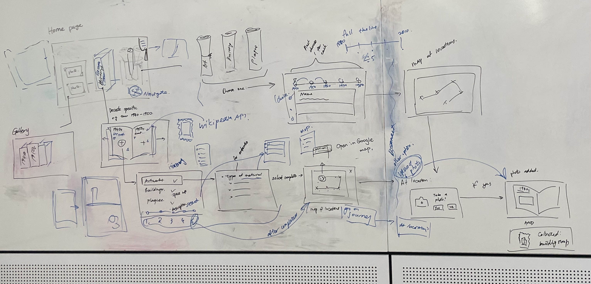

ME
I'm Sigourney Song, a postgraduate student currently studying at the University of Queensland in Interaction Design. I am very interested in the UX UI direction and hope to achieve part of the design and interactive experience through web design.
Through my past architecture design studies, I am also proficient in graphic design, 3D modeling, and photography. In the future, I hope to combine these fields and apply them to new designs and developments.
Always welcome new ideas and participation!
Please email me via: sixuan.song@uqconnect.edu.au
Melbourne PastPort
Melbourne PastPort is an interactive website application implemented using JavaScript, CSS and React libraries. It aims to provide users with an immersive experience by helping them embark on a journey through Melbourne's history by selecting places to visit and creating tours around the city's culture, including exploring its art, architecture and historical plaques. By receiving enough feedback on their actions, users interact with the product and feel natural, further gathering memories and experiences.
PART A-D
PART A: Design Inspiration
Through initial brainstorming in the studio, I initially chose to explore Melbourne's performance venues as the theme, researched how to use the API, and developed the web interface. Through interactive description and development, consider the involvement of the database and lay the foundation for subsequent projects.
PART B: Design Proposal Milestone
The tasks at this stage mainly combine personal poster design to develop new themes and develop new ideas from initial ideas to develop an application. In this process, the focus is on audience target and application functionality, combining theoretical and realistic user expectations to assist application development.
Team Development
Combined with the theme characteristics of the first assignment, we chose to take the exploration of Melbourne art and culture as the design core for the application to be developed. On the day of the presentation, we targeted people aged 18-25 who want to travel as our main target users. It shows the relevant data sets that the application needs to involve; low-fidelity wireframes that highlight the correlation of basic functions and derived functions; user interaction processes to prove feasibility and existing similar applications.
My Contribution
In design inspiration, I am mainly responsible for thinking about the communication relationship with users. Help the team better understand and focus on target users by building Persona. Based on the virtual needs of the target users, I tried to connect the needs and expectations of users aged 18-25 who want to travel with design decisions and functional choices. Ensure a shared understanding of users across the entire team through a visual and easy-to-understand tool.
Similarly, the production of Storyboard shows the scenes of users interacting with the system, helping the team to see the entire user experience more clearly. The needs of the virtual user in the persona and the possible interactions between the user and the system to achieve the needs are visually narrated to reveal possible problems or contradictions. Helps teams more easily build consensus between design and implementation, identify key interaction points, and correct potential issues before actual implementation.
Reflection
After the presentation, we received feedback from the tutor that the lack of creativity may lead to the destruction of the value of the project. Obviously, our initial idea is very similar to common navigation software and has no novel features, so it seems difficult to arouse users' interest in choosing it. Through small user interviews, we discovered users’ needs for food, scenery, and photography. Survey results show:
1. Respondents do not tend to post all photos to social media, choosing instead to share them with close friends or relatives.
2. Organizing photos and enjoying the memories is a common practice, with many people looking back on them regularly.
3. Most respondents believe that photos are a powerful tool for recalling and sharing travel experiences, playing an important role in preserving emotional connections.
Combining user surveys and literature research further confirmed the importance of photos and emotional connections, providing theoretical support for the core functionality of the proposal. By collecting multiple data sets and brainstorming ideas, in order to emphasize the importance of creativity, we conducted a new round of brainstorming in the studio. We came up with a concept based on a historical treasure hunt that enables users to discover art save photos in Melbourne, and generate new sketches. New brainstorming is very effective, allowing everyone to build on different design ideas and modify them. This improves efficiency and directly determines the design direction and generation limits of "creative" functionality.
PART C: MVP Milestone
The development process of MVP focuses on the realization of functions. On the basis of optimized design, code is used to maximize and rationalize the display of core functions and appearance. This is the transition from ideas and sketches to the actual product, the second iteration of the interactive prototype.
Team Development
Through feedback from the previous assignment, we developed a new and refined design. Focusing on the implementation of core functions (travel records and filter conditions), we only performed medium-to-high fidelity rendering in terms of appearance accuracy and color and put more experience into using the database and running the website. At this stage, we work more independently than before. Each person's part is not highly relevant and neglected to discuss.
My Contribution
In design inspiration, I am mainly responsible for thinking about the communication relationship with users. Help the team better understand and focus on target users by building Persona. Based on the virtual needs of the target users, I tried to connect the needs and expectations of users aged 18-25 who want to travel with design decisions and functional choices. Ensure a shared understanding of users across the entire team through a visual and easy-to-understand tool.

Reflection
The feedback we want to get at this stage is related to the design of our concept rather than the implementation of the project, that is, whether our design provides a complete interaction cycle and whether the design is easy to understand. Unfortunately, the questions we asked lacked clarity and were misunderstood, resulting in feedback that was detrimental to the project. Therefore, the project will need to rely on user testing in future iterations.
It is clear that the quality of feedback depends heavily on the clarity of the questions asked, as unclear or misunderstood questions can lead to unhelpful feedback. Peer feedback highlights the importance of effective communication, especially when seeking feedback on design concepts. Clarity in asking questions is crucial to ensuring that the feedback received is constructive and useful. This determines how our future research will be conducted: using precise and clear communication to ensure that project intentions are clearly communicated. Clear and well-structured questions are crucial to gathering valuable insights.
In addition, there are still differences of opinion on interface clarity and development. It can be found that design ideas can be optimized and perfected through discussion among many people. However, in terms of the development of details and the expression of images, cooperation may not only reduce efficiency but also lead to inconsistent interfaces.
PART D: Final Report
The final product involves two parts: Trade Show and Report. The Trade Show is an opportunity to present and ask for some feedback and questions, with a final critical reflection and future development expectations. The final web page has been produced at the exhibition, and has been tested by users, and opportunities for improvement have been obtained from feedback. It is currently the most complete and testable product.
Team Development
The focus of this stage of the design process is on iteration of the interactive prototype. Due to differences in design thinking, we iterated on two versions simultaneously using Figma. Improve user visibility and feedback through three iterations. By introducing improvements such as hover effects, adding sticky notes, and tweaking navigation, the team tried to address the issues users mentioned during testing.
The final design further improved the interface design by comprehensively considering user test feedback, including modifying page elements and improving interaction methods. The final design strives to provide a better user experience by enhancing visibility and providing more user feedback while retaining a sense of theme. We ended up recreating the entire design using code at the Trade Show and showing the development from the beginning to the final product.
My Contribution
Through the mid-to-high fidelity prototype of MVP, two groups of results emerged due to user feedback: they believed that the interface for mobile applications should be simple and look modern; they believed that historical elements that fit the theme should retain and enhance the connection with real-world elements. While trying to simplify the interface and improve functionality based on feedback, I tried to work on a new iteration separately with another designer on the team.
The part I am responsible for focuses on modernizing software functions, optimizing the home page interface, and unifying the entry buttons for each option to help users quickly understand the purpose of the interface. Instead of photos, use icons as much as possible to improve user reading efficiency from the visual aspect of images.
By participating in the final design, I provided the design principles followed during the design to demonstrate the logic and basis of the design.
Reflection
It is worth noting that it was not until the last iteration that we chose to change the application for mobile phones to the web page for PCs. It can be seen that through continuous optimization of functions and based on real experience and feedback, products that are truly suitable for user needs can be derived.
Taking into account feedback given by tutors at the Trade Show and user testing of the final product, the product was designed to be cohesive while maintaining a sense of theme by providing helpful user guidance. Prioritizing system responsiveness creates an immersive user experience. Multiple optimizations in visual design and functional implementation enabled the final product to successfully present the original design intent and functional planning. The design takes into account the needs of users and is highly recognized for improvements, creating a strong foundation for the success of the product. The API call is fully functional and successfully enables users to select the location they want to visit, and users have expressed widespread praise for the visual design and functionality of the product.
However, the product may face challenges with a niche audience, and the way the gallery stores trips may not be intuitive enough for users who just want to view past travel history and not necessarily take photos. Although originally designed as a mobile application, the final implementation for the Web may result in certain functions not being fully utilized on the network. At the same time, there are some problems with navigation during interaction. Users may feel lost, especially when selecting a location and navigating to it. Further improvements are needed to improve the user's position awareness within the direction and the product's appeal to a wider user group.
Key directional considerations for future improvements include the adoption of a responsive design that ensures seamless access to the product on a variety of devices to improve overall usability. Introducing a complete backend solution will enhance system stability and performance. By expanding the data set, the product can be made more attractive, especially by covering more geo-cultural elements to meet a wider range of user interests. Optimizing image processing technology will improve performance and user experience while introducing a random location selector to provide users with more opportunities to explore. Adding the ability to save drafts of a journey and providing user tutorials and guidance will improve the user onboarding experience. Increased visibility of visited locations, implementation of stamp image functionality, and improved selection and deselection functionality all contribute to the product's usefulness and appeal. These comprehensive improvements will further strengthen the product's competitive position in the market.
REFLECTION
EXPEXT FOR THE COURSE
I was very interested in API and dynamic web development at the beginning, and I hope to gain an in-depth understanding of related knowledge and skills through this course. I hope to learn how to effectively call APIs, achieve dynamic web page effects, and apply these technologies in actual projects.
I look forward to experiencing the whole process of building a fully functional web product through the actual application of the UQCloude platform. I hope to master practical skills for developing and deploying on cloud platforms.
I hope to work closely with designers and programmers in real projects, understand the workflow between them, and learn how to collaborate efficiently in a team, thereby improving the quality and efficiency of the overall project.
LEARNING EXPERIENCE
While working in teams, I found some differences in understanding between designers and programmers, which emphasized the importance of effective communication. More in-depth discussions and clear identification of requirements help avoid problems during the design to development phase.
During the design to the development process of the project, the difficulties in implementing some details made me realize that closer collaboration is needed within the entire team. Solving problems promptly and sharing experiences with team members is key to ensuring project progress and quality.
In project management in complex environments, I found that there is still room for improvement in my coordination skills. Clearer plans and UEDIV can help teams better understand project progress and avoid information gaps.
FUTURE SUGGESTION
In the early stages of a project, I think it is easy for different teams to choose similar themes, resulting in a more repetitive project. It is recommended to form a team as early as possible and confirm the theme to save subsequent time and effort.
In PowerPoints, hidden detailed annotations may not be easily noticed. It is recommended that designers clearly mark this in the design draft and confirm it in detail with the programmer to ensure consistency of understanding.
In addition to the implementation of functions, I think user experience also needs more attention. Working together as a team and considering the overall user experience will help improve the overall quality of the project.
DEVELOPMENT
For the framework of the entire web page, I developed a black and white themed look using interesting web page looks proposed in References. Differentiate different parts by color. At the same time, in order to let readers know their status, a center line is set in the navigation bar according to the status of each page part. Readers can also jump directly to that section while clicking on it. On the title and image, I added dynamic effects to highlight new parts and also help enhance the readability of the page.